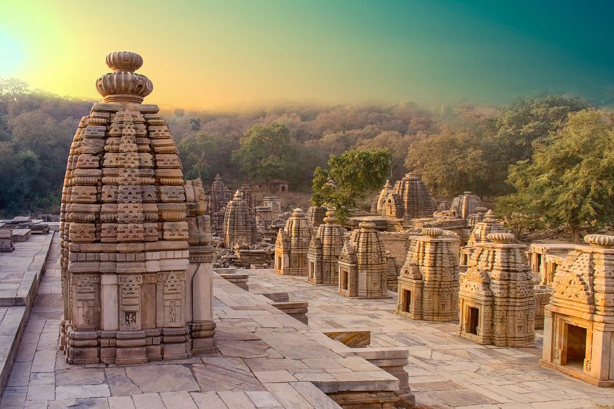

The notable Padavali fortress was built in the 18th century by the Jat Ranas rulers of Dhaulpur. Graciously guarded by a lion and lioness, the fort also has a temple that once served as a divine place to worship Lord Shiva. Every stone used in the fortification and in the making of the temple has something to convey about the ancient era through its inscription and detailing!
The site is not just about one temple; the Bateshwar temples are a cluster of almost 200 mini grandeurs made of sandstone, devoted to lords Shiva and Vishnu. Spread over 25 acres, these shrines were built across slanted hills near Padavali. The temples were constructed in the 8th to 10th century AD probably during the Gurjara-Pratihara Dynasty. Interestingly, the jungle nearby is full of beautiful birds like peacocks, parakeets and kingfishers. One can often spot the national bird perching and posing on the rooftop of the temples.
